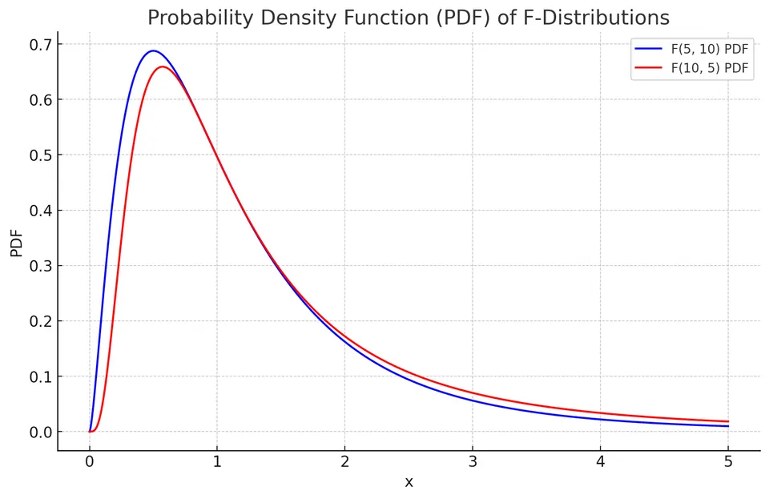
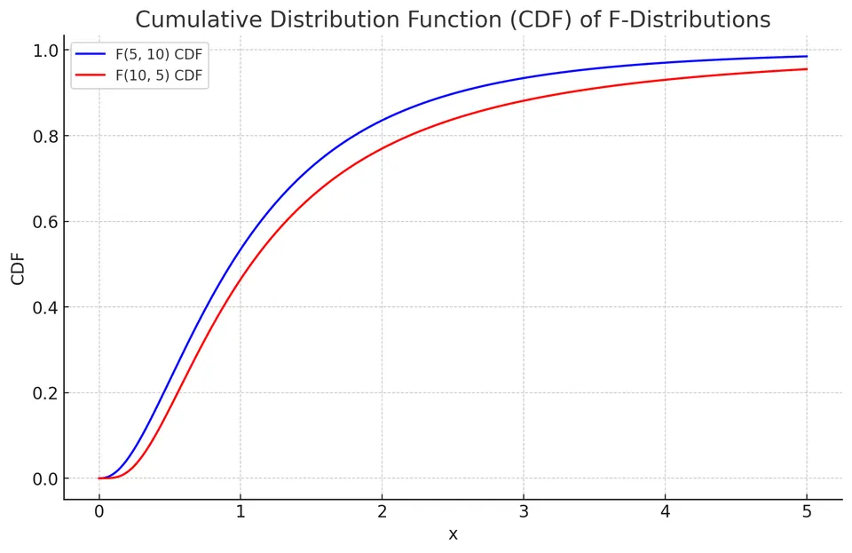

F Distribution
The F-distribution, also known as the Fisher-Snedecor distribution, is a continuous probability distribution of the ratio $F=(U/d_1)/(V/d_2)$ of two independent chi-square variables $U\sim\chi^2(d_1)$ and $V\sim\chi^2(d_2)$, each divided by its degrees of freedom. It arises in hypothesis testing when comparing the variances of two normally distributed populations. The F-distribution is denoted as $X \sim F(d_1, d_2)$, where $d_1$ and $d_2$ are the degrees of freedom for the numerator and denominator, respectively.
Both scaled chi-square variables have expectation one, so their ratio compares two variance estimates expressed on a common null scale. A denominator that happens to be small produces a large ratio; this explains the distribution's positive skew and its unbounded upper tail. The order of the degrees of freedom matters: if $F\sim F(d_1,d_2)$, then $1/F\sim F(d_2,d_1)$.
Probability Density Function (PDF)
The PDF of an F-distribution is given by:
$$f(x) = \frac{\sqrt{\frac{(d_1x)^{d_1} \cdot d_2^{d_2}}{(d_1x + d_2)^{d_1 + d_2}}}}{xB(d_1/2, d_2/2)}$$
where $B(\cdot)$ is the beta function.
The density is defined for $x>0$ and is zero for $x<0$, with $d_1,d_2>0$. An equivalent form makes its dependence on $x$ easier to evaluate:
It follows from the change of variables $Q=d_1F/(d_1F+d_2)$, for which $Q$ has a Beta$(d_1/2,d_2/2)$ distribution. The same transformation gives the CDF below.

Why a Beta Function Appears
Independent chi-square variables U and V are gamma variables with shapes $d_1/2,d_2/2$ and the same rate $1/2$. Transform them into a total $S=U+V$ and a fraction $Q=U/(U+V)$. The inverse transformation is $U=QS$, $V=(1-Q)S$, with Jacobian magnitude S.
Substituting into their joint density separates a term proportional to $q^{d_1/2-1}(1-q)^{d_2/2-1}$ from a gamma density in S. Thus Q is Beta$(d_1/2,d_2/2)$ and is independent of S. Since
$$ F=\frac{d_2}{d_1}\frac{Q}{1-Q}, \qquad Q=\frac{d_1F}{d_1F+d_2}, $$
the F density and CDF follow by a monotone change of variables. In particular, $dq/df=d_1d_2/(d_1f+d_2)^2$. This derivative supplies the density's Jacobian factor; the CDF simply evaluates the beta CDF at the transformed threshold.
For $F\sim F(d_1,d_2)$, taking a reciprocal swaps the two chi-square components, so $1/F\sim F(d_2,d_1)$. It also swaps the tails. Numerator and denominator degrees of freedom must follow their corresponding variance estimates when a ratio is reversed.
Cumulative Distribution Function (CDF)
The CDF of an F-distribution can be expressed in terms of the regularized incomplete beta function, $I_x(a, b)$:
$$F(x) = I_{\frac{d_1x}{d_1x + d_2}}\left(\frac{d_1}{2}, \frac{d_2}{2}\right)$$

Expected Value and Variance
The expected value (mean) of an F-distribution is given by:
$$E[X] = \frac{d_2}{d_2 - 2}, \text{ for } d_2 > 2$$
The variance of an F-distribution is given by:
$$\text{Var}(X) = \begin{cases} \frac{2d_2^2(d_1 + d_2 - 2)}{d_1(d_2 - 2)^2(d_2 - 4)}, & \text{if}\ d_2 > 4 \\ \infty, & \text{if}\ 2 < d_2 \le 4 \\ \text{undefined}, & \text{if}\ d_2 \le 2 \end{cases} $$
The CDF formula applies for $x\geq0$ and is zero below zero. Although the numerator degrees of freedom affect the shape, existence of the mean and variance is controlled by the denominator tail: $E[F]$ is finite only for $d_2>2$, and $E[F^2]$ only for $d_2>4$. The mean therefore need not equal one even though both scaled chi-square components have mean one; expectation does not pass through a ratio.
Why the Mean Is Greater Than One
Although $E[U/d_1]=E[V/d_2]=1$, the expectation of their ratio is not the ratio of expectations. Independence allows
$$ E[F]=E[U/d_1]\,E[d_2/V] =\frac{d_2}{d_2-2},\qquad d_2>2. $$
The reciprocal gives disproportionate weight to small denominator values. For example, $F(5,10)$ has mean 1.25 and variance about 1.3542. A value of one is the equal-scale comparison point, but is not generally the distribution's mean.
More generally,
$$ E[F^r] =\left(\frac{d_2}{d_1}\right)^r \frac{\Gamma(d_1/2+r)\Gamma(d_2/2-r)} {\Gamma(d_1/2)\Gamma(d_2/2)}, \qquad -\frac{d_1}{2}<r<\frac{d_2}{2}. $$
The upper restriction comes from behavior near zero of the chi-square denominator. Equivalently, the F density's large-x tail is proportional to $x^{-d_2/2-1}$. Small denominator degrees of freedom therefore produce a particularly heavy right tail. For $d_2\leq2$ the first moment diverges; for $2<d_2\leq4$ the mean exists but the variance diverges.
The NIST F-distribution reference gives the density and basic distributional quantities. These formulas describe a specific ratio law, not every statistic that happens to compare two positive quantities.
Example: Variability in Agricultural Yields
An agronomist is assessing the variability in yield between two wheat varieties. Random samples yield the following data:
- Wheat Type 1: Sample size (n1) = 15, Variance (variance1) = 20
- Wheat Type 2: Sample size (n2) = 12, Variance (variance2) = 30
To compare the variances, the agronomist employs an F-test.
Given:
- F-test formula: $F = \frac{\text{variance1}}{\text{variance2}}$
I. Compute the F-statistic:
The F-statistic is calculated as the ratio of the two sample variances.
$$ F = \frac{20}{30} = \frac{2}{3} \approx 0.67 $$
II. Determine the degrees of freedom (df) for the test:
The degrees of freedom for each sample are calculated as the sample size minus one.
- Degrees of freedom for Wheat Type 1 (df1): $n1 - 1 = 15 - 1 = 14$
- Degrees of freedom for Wheat Type 2 (df2): $n2 - 1 = 12 - 1 = 11$
III. Interpret:
Under $H_0:\sigma_1^2=\sigma_2^2$, $F\sim F(14,11)$. Here $P(F\le 2/3)\approx 0.235$, so the two-sided p-value is $2\times0.235\approx 0.47$. The 95% acceptance region is $[0.32, 3.36]$, which contains $0.67$, so there is no evidence that the variances differ.
This exact reference requires two independent samples from normal populations. Under the null, each sample variance divided by the common population variance is a scaled chi-square variable, and independence of the samples gives the required independent ratio. For the equal-tail two-sided test, compute $2\min\{P(F\leq f),P(F\geq f)\}$, capped at one. One should not use twice the upper tail automatically when the observed ratio is below one.
The result fails to reject equality; it does not establish equal variances or a small difference. The classical variance-ratio test can be sensitive to non-normality. A scientifically meaningful variance comparison should therefore inspect the data distribution and distinguish this exact model from more robust procedures such as a Levene-type comparison.
Inverting the Variance-Ratio Pivot
Let $\theta=\sigma_1^2/\sigma_2^2$ and $R=S_1^2/S_2^2$. For independent normal samples,
$$ \frac R\theta =\frac{S_1^2/\sigma_1^2}{S_2^2/\sigma_2^2} \sim F(n_1-1,n_2-1). $$
If $f_p$ denotes the p quantile of that F distribution, solving $f_{\alpha/2}\leq R/\theta\leq f_{1-\alpha/2}$ gives
$$ \left[\frac R{f_{1-\alpha/2}},\frac R{f_{\alpha/2}}\right]. $$
For the wheat data, $R=2/3$, and the 2.5% and 97.5% quantiles of $F(14,11)$ are approximately 0.32314 and 3.35881. The 95% interval for the population variance ratio is approximately $(0.1985,2.0631)$. It contains one, agreeing with the equal-tail two-sided test, but also contains substantial inequality in either direction.
Reversing the comparison gives an observed ratio 1.5 with degrees of freedom 11 and 14. Its upper-tail probability is the same as the original ratio's lower-tail probability. One must reverse both the ratio and its reference degrees of freedom. The inferential target should remain attached to the original population labels.
Why ANOVA Uses F to Test Means
For k independent normal groups with a common within-group variance, let N be the total sample size, $\bar X_j$ the group mean, and $\bar X$ the overall mean. Decompose the total variation into
$$ \mathrm{SS}_{\mathrm{between}} =\sum_{j=1}^k n_j(\bar X_j-\bar X)^2, \qquad \mathrm{SS}_{\mathrm{within}} =\sum_{j=1}^k\sum_i(X_{ij}-\bar X_j)^2. $$
Under the null of equal population means, the two sums divided by $\sigma^2$ are independent chi-square variables with $k-1$ and $N-k$ degrees of freedom. They come from orthogonal normal directions: differences between fitted group means and residual variation within groups. Dividing by their degrees of freedom yields two estimates of the same variance under the null:
$$ F=\frac{\mathrm{SS}_{\mathrm{between}}/(k-1)} {\mathrm{SS}_{\mathrm{within}}/(N-k)} \sim F(k-1,N-k). $$
When group means differ, the between-group term contains a systematic mean contribution and tends to increase. This is why a ratio built from sums of squares can test a hypothesis about means. The upper tail is relevant; an unusually small between-group variation does not support the alternative that some mean differs.
A Three-Group Calculation
Consider these nine observations:
| Group | Observations | Group mean | Within-group squared deviations |
|---|---|---|---|
| A | 2, 3, 4 | 3 | 2 |
| B | 4, 5, 6 | 5 | 2 |
| C | 6, 7, 8 | 7 | 2 |
The overall mean is five. Between-group variation is $3(3-5)^2+3(5-5)^2+3(7-5)^2=24$, while within-group variation is $2+2+2=6$. The resulting ANOVA table is
| Source | Sum of squares | Degrees of freedom | Mean square | F |
|---|---|---|---|---|
| Between groups | 24 | 2 | 12 | 12 |
| Within groups | 6 | 6 | 1 | |
| Total | 30 | 8 |
Under the normal common-variance null, $P(F(2,6)\geq12)=0.008$. This tests whether all three population means are equal; it does not establish that every pair differs. Further contrasts require their own stated hypotheses and, when appropriate, multiplicity handling. Causal interpretation additionally depends on the assignment and sampling design.
The NIST ANOVA explanation describes the mean-square ratio and its degrees of freedom. Its source-of-variation labels can differ from those used here, so the defining sums are more reliable than an abbreviation alone.
Regression Tests and the Connection to t
For nested normal linear models, let the full design have p independent columns and let the restricted model impose q independent linear restrictions. Under the null, the increase in residual sum of squares, $\mathrm{RSS}_{\mathrm R}-\mathrm{RSS}_{\mathrm F}$, divided by $\sigma^2$ is chi-square with q degrees of freedom. It is independent of the full-model residual sum of squares. Hence
$$ F= \frac{(\mathrm{RSS}_{\mathrm R}-\mathrm{RSS}_{\mathrm F})/q} {\mathrm{RSS}_{\mathrm F}/(n-p)} \sim F(q,n-p). $$
The restrictions must be nested within the same fitted response problem, with the normal independent common-variance error model used in this exact derivation. Comparing residual sums from unrelated datasets or nonnested models does not produce this reference law.
With one restriction, the matching t statistic satisfies $F=T^2$: a squared standard normal numerator is $\chi^2(1)$, while its independent variance denominator remains scaled chi-square. Thus $T\sim t(\nu)$ implies $T^2\sim F(1,\nu)$. The upper-tail F test then matches the two-sided t test; squaring removes the sign of the estimated contrast.
The two-sample pooled t test and a two-group ANOVA are one instance of this identity. A Welch statistic with approximate degrees of freedom should not be substituted into an exact pooled-ANOVA claim. The distributional construction, rather than the statistic's name, determines which relationship applies.
Applications
F-distributions are primarily used in hypothesis testing, such as the F-test for testing the equality of the variances of two normally distributed populations, and in the analysis of variance (ANOVA) for comparing the means of multiple groups. They are also used in regression analysis to test the overall significance of a model and in constructing confidence intervals for the ratio of two population variances.